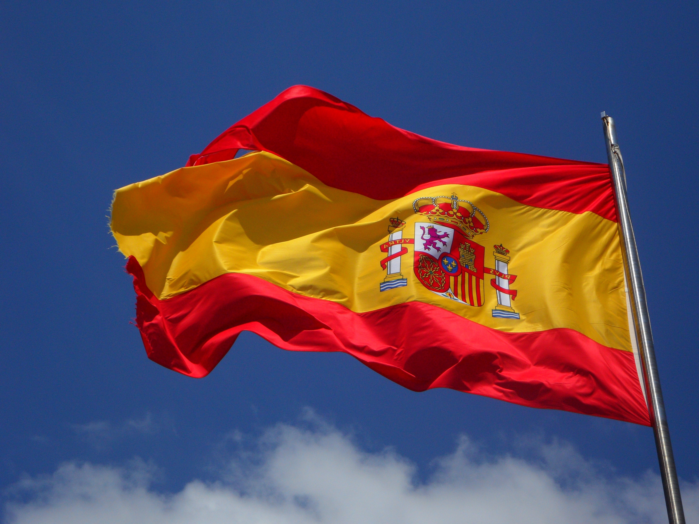
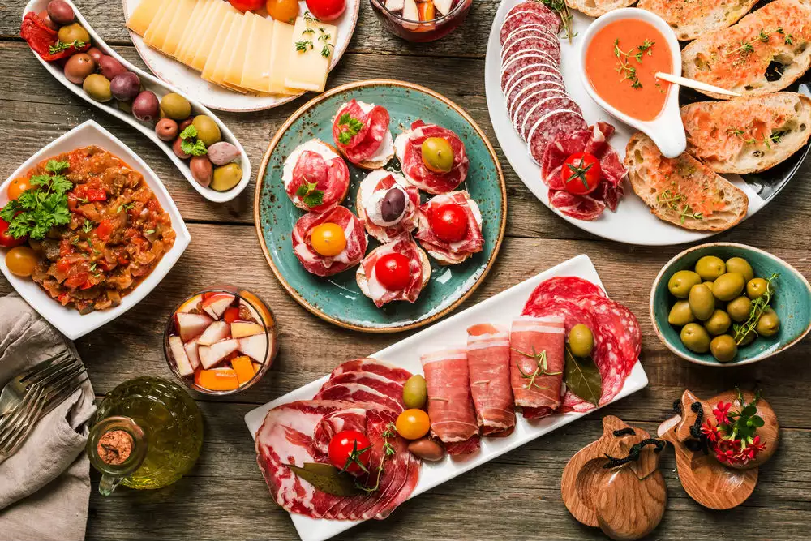
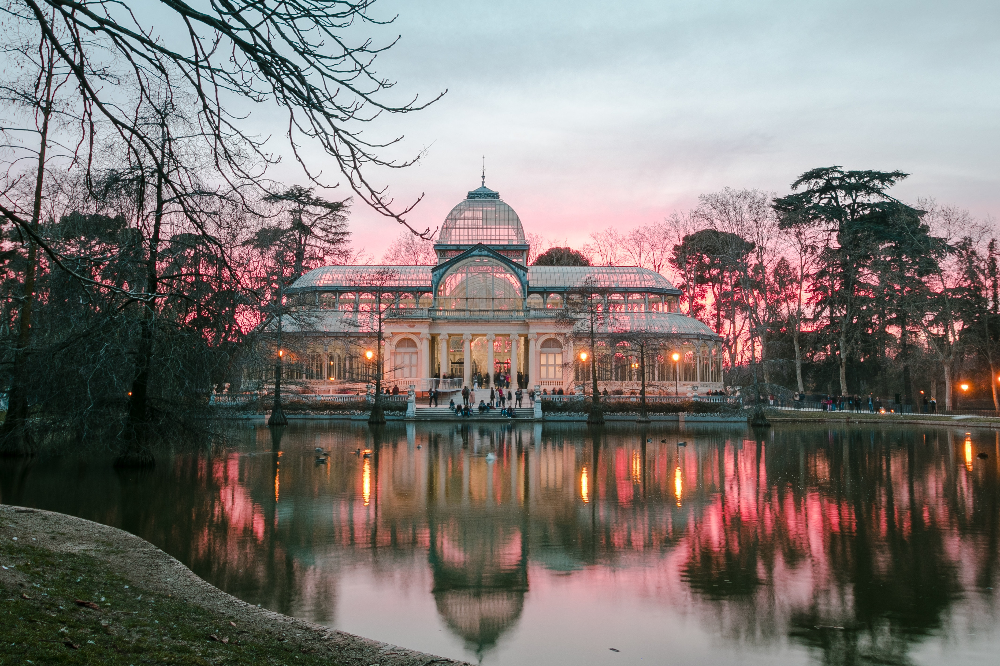
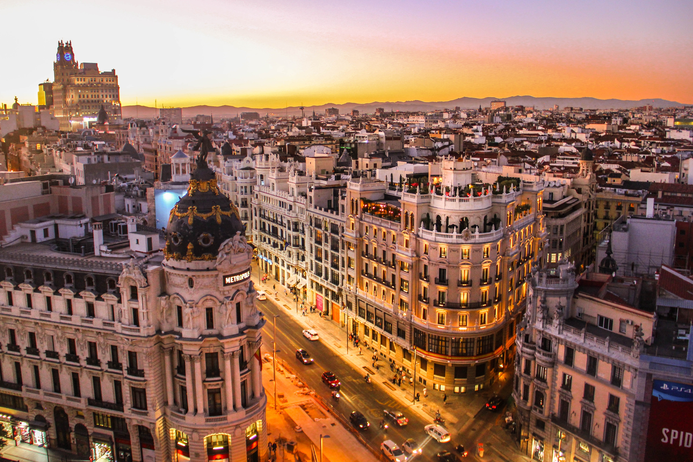

I hjertet af Madrid
Foto: www.pexels.com
Har du besøgt Madrids største seværdigheder, eller har du bare lyst til at opleve Madrid? Den spanske hovedstad Madrid er fyldt med eksotiske omgivelser og interessante monumenter. Slå dig løs og gå på opdagelse i alt fra Madrids overraskende hovedbanegård til en kulturel by med museer og til landets vilde fester.
Oplev Madrid fra oven
Madrid har nogle ret fede forlystelsesparker f.eks "parque de Atracciones", her kan man se Madrid fra oven. På den lange 2,5 kilometer tur i kabelbanerne svæver man over floden Manzanares og ind i parken Casa de Campo. Man oplever ret meget af byen. Den begynder ved paseo del Pintor Rosales, hvor den kører forbi nogen af madrids store seværdigheder som kongeslottet, Plaza de Espana, det ægyptiske tempel, katedralen og businesskvateret med høje skyskarabere. Efter 10-15 minutters varrighed slutter turen ved kabelstationen Casa de Campo. Ved kabelstationen er der fantastisk udsigt og rig mulighed for at få noget mad og drikke i resturanterne.
Madkulturen i Madrid
Mad er nærmest essensen i spaniernes madkultur. Venner og familie, gamle som unge samles om bordet for at nyde den lækre spanske mad mens de har det sjovt sammen. Spaniernes spisevaner kan varier meget afhængig af hvor i landet man befinder sig. Spanskerne er helt vilde med jamón som er lufttørret skinke, og den nydes til alle lejligheder både hverdag og fest. Overalt på landets tapasbarer ser man skinke hænge ned fra loftet. De friskskårede skiver spises som tapa med et glas sherry eller øl. Noget andet spanskerne er helt vilde med er den berømte tortilla somer en omelet og kan derfor laves med mange forskellige måder, men nogen hævder at den kun skal bestå af æg og kartofler. Det skal lige siges at spanskerne spiser masser af skaldyr og fisk.
Foto: www.pexels.com
Retiro-Parken
Mulighederne er mange i Parque de Retiro. Det er ikke kun muligvis en park, den byder på meget mere end bare afslapning og natur. I markedet på Retiro kan du købe hvilken som helst bog på markedet. Derudover er der også fitness faciliteter. Man kan også leje en båd og sejle rundt på søen. Man kan dog også bar nøjes med at nyde naturen og bare slappe af. Retiro betragtes af Spanierne som byens mest rolige og cill sted, oveni at det er så smukt, så kan det helt sikkert anbefales. Det er gratis at besøge Retiro og det besøget værd.
Foto: www.pexels.com
Gran Vía - den store vej
Calle Gran Vía, betyder den store vej, det er nemlig Madrids centrum. I Gran Vía finder du alt hvad du behøver. Der er teatre,biografer,resturanter,shoppingbutikker og naturligvis natteliv. Hvis man er i Madrid skal man helt klart tage forbi Gran Vía. Det er en vidunderlig syn, med alle de store bygninger og se gaden lyse helt op. Meget af arkitekturen stammer fra d.20 århundrede og er meget kendt for facerderne på bygningerne der vender mod gaden. Typisk er det over hele madrid men især i Gran Vía. Gran Vía er blandt ander kendt fra medier og litteratur.Den ses ofte i reportager om Madrid. Bydelen nævnes også i mange bøger.
Foto: www.pexels.com